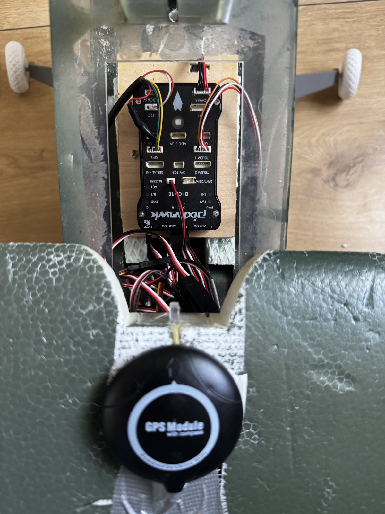
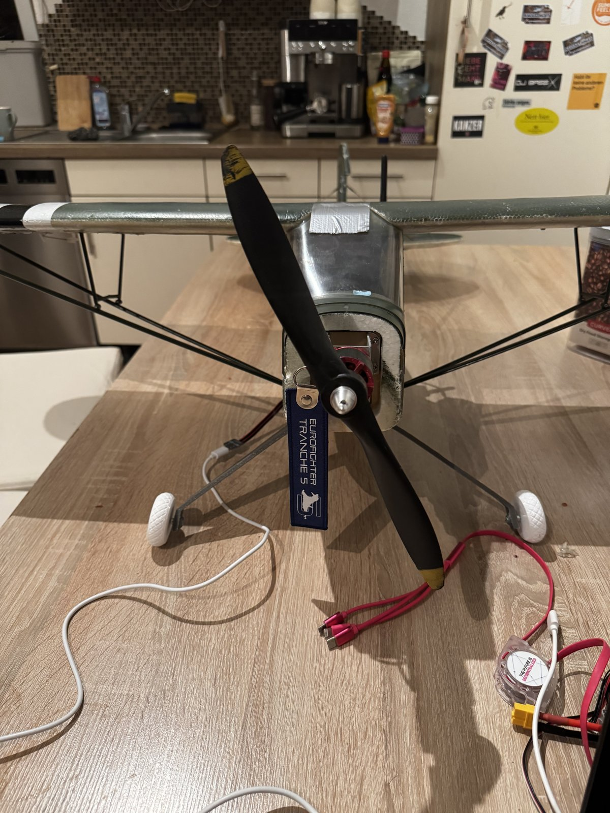
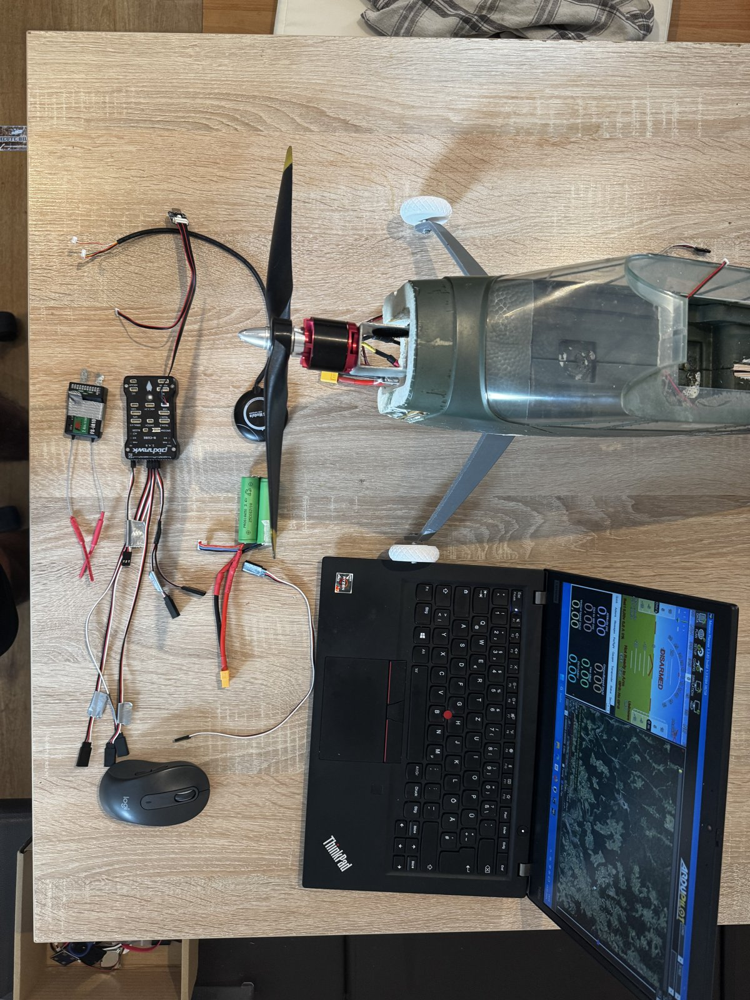

ArduPilot & Pixhawk
My work centres on integrating the flight controller and ArduPilot into the existing aircraft systems.
Aircraft integration · In progress
Integrating ArduPilot and a Pixhawk controller into an existing, flight-proven RC aircraft design.
View build photos & clips ↓
Build gallery
Workbench photos and clips from the integration in progress. Select a photo to view it in full.


My contribution
The Piper is an existing, flight-proven RC aircraft design. My contribution is the ArduPilot and Pixhawk integration, together with the design of mounts for the controller, antenna and battery. This work is in progress; the airframe's flight history does not establish that the new autopilot installation has been validated.
Engineering focus
My work centres on integrating the flight controller and ArduPilot into the existing aircraft systems.
I am designing mounts around the available installation locations and component access.
The integration must accommodate the components, wiring and access needs within the existing fuselage.
Component placement and mount design must account for added mass and the aircraft's centre of gravity.
Connected project
This aircraft is the intended source of logs for my planned Flight Data Analysis & Anomaly Detection software. The software project will focus on understanding recorded behaviour and highlighting events for review.
Explore Flight Data Analysis & Anomaly Detection →